This topic includes information about how to perform the six- and twelve-month (or 60,000- and 120,000-test) preventive maintenance (PM) procedure for the DxI 9000 instrument.
Safety Reminder
Servicing the DxI 9000 instrument involves potential risks for pinch and puncture, electrical shock, and exposure to hazardous materials. You must mitigate these risks by taking appropriate countermeasures. See
Safety for more information.
See the table below for PM intervals and estimated completion time.
PM Interval
Time to Completion
6 months or 60,000 tests (whichever occurs first)
6-7 hours, including verification
12 months or 120,000 tests (whichever occurs first)
6-8 hours, including verification
Note: The system does not currently track test count. The test count interval is a guideline you can use to help identify PM cadence for higher-volume customers based on their contract.
Required Materials
These materials are at minimum required to perform preventive maintenance:
PM Kit (either or):
C64790 - 6 Month Preventive Maintenance Kit
Item Number
Qty Included
Description
B93012
3
Aspirate Probe
5322A (Mfg. PN 46-005322A)
4
Wash Tower O-Ring, Upper
5336A (Mfg. PN 46-005336A)
4
Wash Tower O-Ring, Middle
129341 (Mfg. PN 46-012934-1)
4
Wash Tower O-Ring, Lower
C32456
3
Aspirate Peri-Pump Tubing (not same as Access/DxI)
6981C (Mfg. PN 59-006981C)
1
Grease, No. 2 Lithium (1mL)
C64791 - 12 Month Preventive Maintenance Kit
Item Number
Qty Needed
Description
B93012
3
Aspirate Probe
5322A (Mfg. PN 46-005322A)
4
Wash Tower O-Ring, Upper
5336A (Mfg. PN 46-005336A)
4
Wash Tower O-Ring, Middle
129341 (Mfg. PN 46-012934-1)
4
Wash Tower O-Ring, Lower
C32456
3
Aspirate Peri-Pump Tubing (not same as Access/DxI)
6071 (Mfg. PN 53-010607-1)
4
Reagent Pipettor Probe Tip
6981C (Mfg. PN 59-006981C)
1
Grease, No. 2 Lithium (1mL)
Proper Lubricants:
B10571 - Grease, Losoid 72515 (40g)
6981C - Grease, No. 2 Lithium (1mL)
986410 - Oil, 3-IN-ONE (3 oz)
Special Tools:
Pipettor tip nut torque wrench (PN 7343A) - same as Access 2/UniCel DxI
Optional: Click and Seal (CnS) wrench (PN B26294) - same as Access 2/UniCel DxI. Use to tighten CnS fittings found on transducer tubing and other locations. See illustration below:
Miscellaneous Supplies
Alcohol wipes (for removing tough deposits)
DI water
Gauze and paper towels (for general cleaning)
Kimwipes or similar (for general cleaning)
Lint-free applicators or swabs (for general cleaning)
Preparing the System and Performing an Initial Evaluation
Perform this procedure to prepare the system and perform an initial evaluation.
Unload all reagent packs from the instrument and temporarily store them in a refrigerator to maintain stability.
Important: To prevent contamination or leaking of reagents, keep packs upright and avoid handling the elastomeric seal on top.
Note: You may do this manually while you inspect the fans in the next step.
Verify all instrument cooling fans are operating:
Remove the front cover of the reagent refrigerator.
Verify all three cooling fans are operating.
Figure 43: Reagent Storage Module (RSM) Cooling Fan Locations
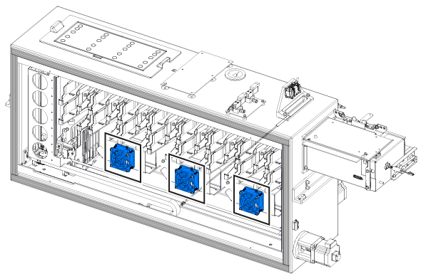
Verify the three instrument case fans and the main instrument blower at the rear of the instrument are all operating.
Disconnect the instrument power cord from the power source.
Inspecting, Cleaning, Lubricating, and Replacing Subsystems
Perform this procedure to inspect, clean, lubricate, and replace subsystems.
Beginning at the tip supply and ending at the sample wheel, move around the instrument across the subsystems and areas listed below and perform the following tasks to inspect, clean, lubricate, and replace components.
Tip Supply: Open the door and slide out the assembly to inspect the tip supply. Remove any fallen tips and debris and clean, as needed. Close the tip supply when finished.
Sample Pipettors: Move the pipettors to the left-most position, for ease of access. Use deionized water and a kimwipe or a lint-free swab to inspect and clean the sample pipettor mandrels (1), camera covers (2), aliquot sample pipettor backlight (3), and collision detection sensor flags (4).
Note: The backlight is located just above the sample presentation unit (SPU) presentation tray lane.
Figure 45: Sample Pipettor Mandrel and Camera Cover Locations
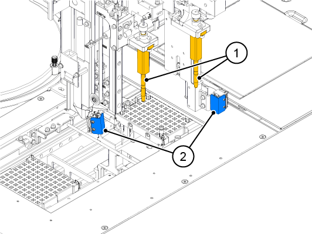
1
Sample pipettor mandrels
2
Sample pipettor camera covers
Figure 46: Aliquot Sample Pipettor Backlight Location
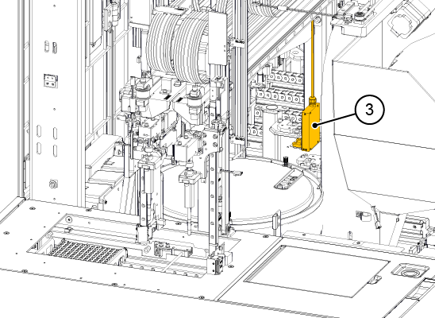
3
Aliquot sample pipettor backlight
Note: If the DxI 9000 is connected to a lab automation system (LAS), you must inspect and clean a second aliquot sample pipettor backlight at the automation line.
Figure 47: Aliquot Sample Pipettor Backlight on the Automation Line
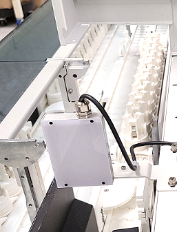
Note: Perform a visual inspection of the collision detection sensor flags on both the aliquot and precision pipettors. If debris is present, clean the area.
Loosen the two M3 screws and remove the collision detection sensor flag.
Inspect under the collision detection sensor flags, in the clearance between the flag and the base. If debris is present, clean the area.
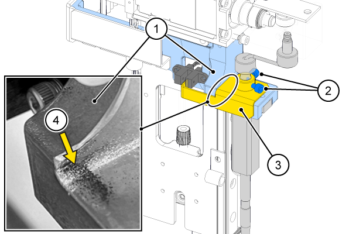
1
Z-axis carriage
2
M3 Screws (x2)
3
Collision detection sensor flag
4
Powder caused by contact with flag
Reinstall the flag back in place and be sure it is not interfering with the die-casting base.
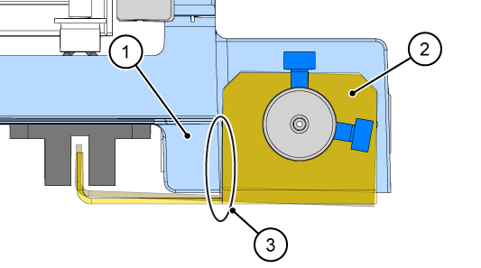
1
Z-axis carriage
2
Collision detection sensor flag
3
Flag does not contact Z-axis carriage
Bulk Feeder and Supply Shuttle: Inspect the bulk vessel feeder, supply carriage, and surrounding chassis area. Remove any fallen vessels, if present. Clean the supply carriage alignment jumper pin with moistened, lint-free cloth.
Sample Presentation Unit: Inspect and clean any debris or spills in the onload, presentation, and offload areas of the SPU, including the barcode reader camera lens.
Clean the offload and onload sensors with a swab moistened with deionized water.
Figure 48: Sample Presentation Unit (SPU) Offload and Onload Sensor Locations
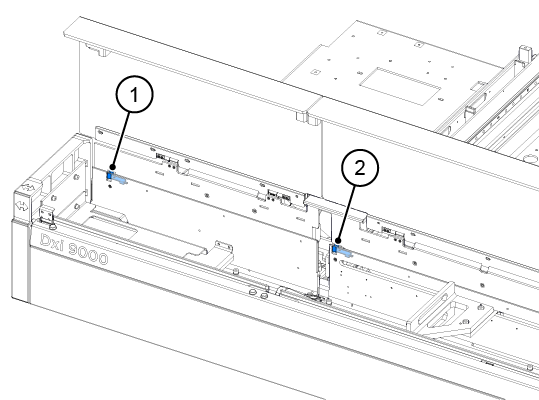
1
Offload sensor
2
Onload sensor
Clean the rails and then manually slide a rack across the rails to confirm smooth operation.
Figure 49: Sample Presentation Unit (SPU) Rail Locations
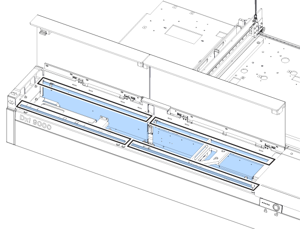
Reagent Pipettors and Wash Towers:
Remove and clean the reagent pipettor wash tower nozzles, replace the O-rings (3 per nozzle), and reinstall. See
Replacing Wash Tower Nozzles and O-Rings for more information.
Note: Inspect the wash tower and nozzle ports for any debris and remove, if present. It may be necessary to back-flush the wash tower nozzles to remove debris.
Caution: DO NOT use cotton swabs or similar material to clean the wash tower nozzles because they may leave debris behind. Beckman polyester and lint free swabs are suggested.
12 Month/120,000 Test PM ONLY: Replace each reagent pipettor probe tip.
Note: During installation, you must use the probe tip torque wrench tool (PN 7343A) to torque the probe tip nuts to the proper specification. While using a 5/16" wrench to hold the transducer stationary, tighten the nut by applying pressure to the indent (the top right side of the image below) until the two "fingers" of the tool make contact with one another.
Substrate Loader: Inspect and clean the substrate loader assembly, including the barcode reader camera.
Reagent Storage:
Remove the front RSM cover to gain access to the interior.
Remove any fallen packs or debris, and discard.
Note: Do not reload fallen packs because they may have been contaminated or may have leaked some reagent.
Wipe up any condensation in the base of the module. (Condensation is normal, particularly during humid months or in humid climates.)
Remove the pipetting nest cover and clean it.
Figure 50: Pipetting Nest Cover and Debris (example)
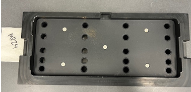
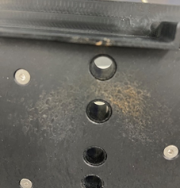
Do not install until after you have completed the reagent pipettor alignments later in this procedure.
Inspect, clean, and lubricate RSM internal components.
Figure 51: Reagent Storage Locations
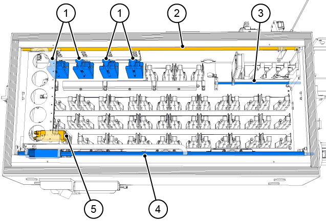
1
Pipetting nests (x4)
2
Upper guide shaft
3
Load tray guide shaft
4
Lower spline shaft
5
Gripper home position
Inspect and clean the tensioners at the front and rear of each of the four pipetting nests (1). Verify the tensioners move freely. Replace components, if needed.
Clean and lubricate the upper guide shaft (2) and the load tray guide shaft (3) with 3-in-1 oil.
Clean and lubricate the lower spline shaft (4) with No. 2 Lithium Grease.
If not already located in the home position, manually move the gripper to the home position (5) and verify that no binding or cables were snagged during movement.
Reinstall the front RSM cover.
Solid Waste Drawer: Open the solid waste drawer and inspect and clean within.
Remove the waste bag from the bin and clean any spills or debris from within the bin.
Remove the bin from the drawer and clean any spills or debris from the base of the drawer.
Remove the entire deflector tray assembly for thorough cleaning. Remove the two screws in the front and slide the tray out of the front of the drawer.
Figure 52: Solid Waste Drawer Tray Removal
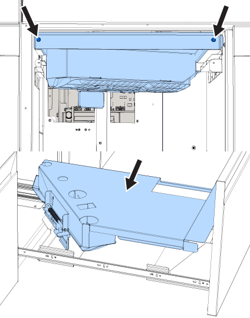
Remove the screws and pull the tray to slide it out.
Clean the transparent window that covers the bag detect sensor at the back of the drawer.
Figure 53: Solid Waste Bag Detection Sensor
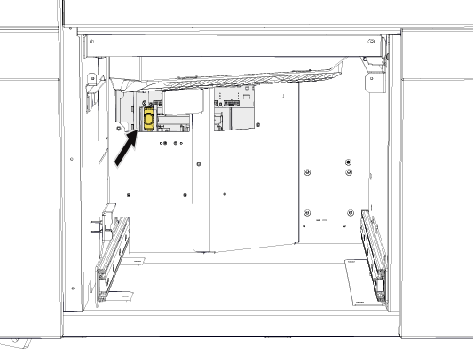
Clean the bag detect reflector on the backside of the drawer cover.
Figure 54: Solid Waste Bag Detection Sensor Reflector
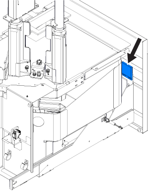
Wash Buffer Supply Drawer: Remove the wash buffer containers and clean the wash buffer supply drawer. Confirm there are no kinks or damage to tubing, and that the tubing does not kink as you open and close the drawer. Inspect the wash buffer pump for signs of leakage or damage. Clean and repair, as needed.
Fluidics Drawer: Open the lower right door and inspect and clean the area.
Clean the instrument air filter and be sure the customer is maintaining it as part of regular maintenance. Check other areas (e.g. the grill) and clean, as necessary.
Note: See the DxI 9000 Access Immunoassay Analyzer
Instructions for Use for cleaning instructions. Use a vacuum, if one is available. Otherwise, wipe any debris from the filter with a dry, lint-free cloth.
Pull out the fluidics tray and inspect it for leaks or spills. Clean and repair, as needed.
With the air filter reinstalled and with the fluidics tray fastened back in place, close the lower right door.
Wash Wheel and Pumps:
Replace the peristaltic aspirate (peri-pump) tubing (3).
Warning: DO NOT use the same tubing found on DxI 600/800 and Access 2. DxI 9000 uses a different type of tubing. Using incorrect tubing may lead to incorrect results.
Note: Clean any debris or buildup from the pump rollers and cartridges. Be sure the pump rollers have not seized and that the cartridges are installed in the correct orientation after tubing replacement. Install the cassettes with the black tabs on the left side and the springs on the right side, as shown in the image below.
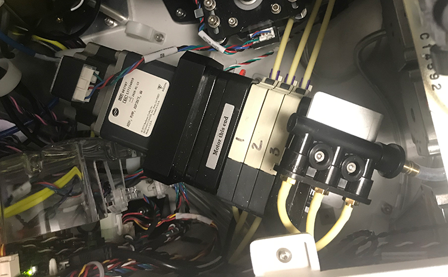
Remove the aspirate probes from the aspirate arm.
Inspect the aspirate probe tubing and Y-fittings for damage. Replace if needed.
Note: Below is a picture of a broken Y-fitting.
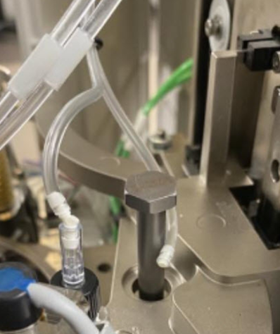
Remove the wash wheel cover. Inspect and clean any signs of debris or spills inside and on the wash wheel.
Inspect the ejector plate guide shaft, rods, and screws. Tighten if loose.
Manually move and inspect the mixer belt and pulleys, including the idler pulley, for any signs of fraying or dust.
Inspect the gripper, spinner, and ejector assemblies for deposits and damage.
Lift the eject rod by the retainer ring and be sure that it drops freely. If the eject rod does not drop freely, clean the upper eject rod with DI water. If the eject rod still does not drop freely, consider replacing the eject rod.
If available, use a mirror or remove the part to inspect the eject rod and collet fingers and the dispense probes (D1/D2).
Clean or replace, as needed.
Clean QS probe by wiping with a lint-free cloth dampened with DI water.
Install new aspirate probes.
Verify there is free vertical movement of all aspirate probe springs, both with the probe plates separated or together.
Reinstall the wash wheel cover.
Verify the substrate tubing from the valve to the probe/heater moves freely as the dispense arm moves up and down. Replace any damaged parts, kinked tubing, or missing check valves.
Reagent Syringe Pumps: Open each rear door (2) to gain access to the reagent syringe pumps. Inspect and clean reagent syringe pumps (8 total, 4 within each door).
12 Month/120,000 Test PM ONLY: Clean and lubricate the reagent pipettor syringe pump drive gears and linear slides with Losimol 72515 Grease. See
Cleaning and Lubricating the Syringe Pump Drive Assembly for more information.
Pick and Place: Inspect the following pick and place (PnP) collets (3) and clean any signs of fluid or debris. (You can use a dampened, lint-free swap, kimwipe, or similar.)
Note: It is not necessary to remove the collets for cleaning unless they are excessively soiled.
Sample PnP
Incubator PnP
Analytic PnP
Incubate Wheel: Remove the incubate wheel cover and set aside. Remove any fallen vessels or debris and clean. Clean alignment jumper pins with a moistened, lint-free cloth.
Luminometer: Clean the jumper pin and inspect for spills (not inside)
Solid Waste Chutes: Clean the tip (2) and vessel (2) solid waste chutes, including disposable tip removers.
Reagent Shuttles: Inspect and clean the reagent shuttles (reaction build carriages) (4) including the alignment jumper pins at each.
Pneumatics: Remove the left rear panel to gain access to the pneumatics components. Inspect the pneumatic accumulator jar for excessive liquid accumulation (>1 inch). If found, after you turn on the instrument, verify operation of the condensation relief valve. (Allow the system to build pressure and use the Machine Control App to cycle the valve.) Replace as needed.
Figure 55: Pneumatic Accumulator Location
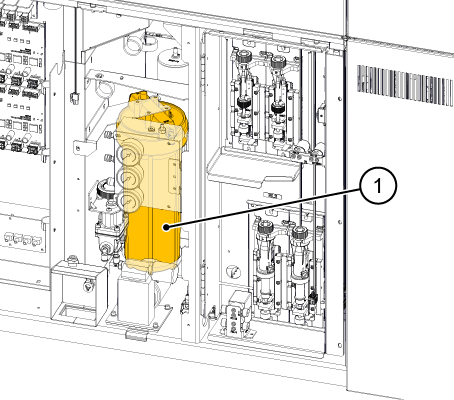
1
Pneumatic accumulator jar
Sample Wheel: Remove the sample wheel cover and set aside. Remove any fallen vessels or debris and clean. Clean the alignment jumper pins with a moistened, lint-free cloth.
Performing Calibrations, Alignments, Priming, and Remapping
Perform this procedure to perform calibrations, alignments, priming and remapping.
Delete the
D:\ProgramData\BeckmanCoulter\Logs\FalconProcessMonitoring\Pass folder.
Select the
SYSTEM RUNNING button and go to
Stop > Pause to enter the instrument into a
YELLOW (Paused) status.
Perform the following tasks according to the table below.
6 month / 60,000 test PM
12 month / 120,000 test PM
For each reagent pipettor, disconnect the tubing at the transducer to drain any fluid from the tip. After the fluid has been drained, calibrate the transducer and verify the voltage. See
Calibrating the Ultrasonics Transducers for more information.
For each reagent pipettor, disconnect the tubing at the transducer to drain any fluid from the tip. After the fluid has been drained, calibrate the transducer and verify the voltage. See
Calibrating the Ultrasonics Transducers for more information.
Prime all fluidics and verify there are no signs of leaking.
Note: Priming may require multiple cycles to purge all air from the lines. Be sure no bubbles are present after priming. If bubbles are present, repeat priming until they are gone.
Prime all fluidics and verify there are no signs of leaking.
Note: Priming may require multiple cycles to purge all air from the lines. Be sure no bubbles are present after priming. If bubbles are present, repeat priming until they are gone.